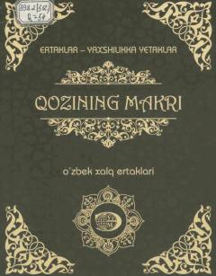

QMBolajonlar uchun tarbiyali va qiziqarli o'zbek xalq ertaklari to'plami.
Ushbu kitobga bolajonlar uchun mo'ljallangan qiziqarli o'zbek xalq ertaklari kiritilgan bo'lib, ular ezgulikka yetaklaydi. Ertaklarda to'g'rilik, halollik va yaxshilik g'oyalari targ'ib qilinadi. Nashr yosh kitobxonlarning ma'naviy dunyosini boyitishga xizmat qiladi.